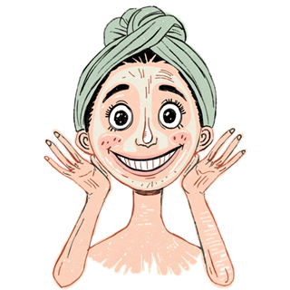
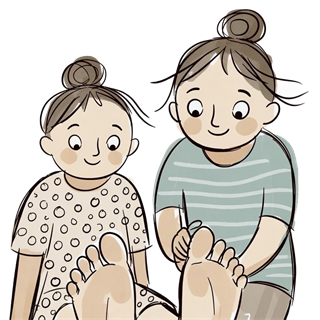

Wellness, One Treatment Room at a Time
KosmetiKos is based in Glomfjord and offers a wide range of treatments across skin, foot, body and nail care. We believe in calm, good craftsmanship, and products that actually work.
Quality Products
We use trusted product lines like Janssen Cosmetics and La Fontaine for safe, effective results.
Personally Tailored
Every treatment is adapted to your skin, your wishes and your pace, whether that's a relaxed foot treatment or an intensive course.
4.8/5 on Google
Our clients highlight great service, skilled therapists and fair prices.
Four specialties: skin, foot, body and nails
Our name says it all: KosmetiKos works with skin, foot, body and nails under one roof. Whether you're stopping by for a quick manicure or a longer La Fontaine or microneedling course, the goal is the same: you leave with a visible, noticeable difference.
The people behind KosmetiKos
Right now there are 6 of us, each with our own thing we care a little extra about.
Julia
Hairdresser

Ranja
Hairdresser and dermal therapist
Maja
Nail designer, hairdresser and skin therapist
Mariell
Nail design
Heidi Merethe
Massage therapist

Elisabeth
Foot therapist, skin therapist and nail design
Elisabeth has run the clinic in Glomfjord since 2007 and has over 35 years of experience as a foot therapist and skin therapist. Today her full focus is on skin, feet and nails.
Meet Elisabeth, your experienced skin and foot specialist
Hello everyone! My name is Elisabeth, and I've run the clinic here in Glomfjord since April 2007. For me, this isn't just a job, it's a lifelong passion. After more than 35 years in the industry, I still love helping my clients feel good, and I'm devoted to delivering treatments with real professional quality and safety.
My professional journey started back in 1989, when I trained as a certified foot therapist, with further training in foot zone therapy and connective tissue massage. Since then the road has been long, full of learning, and full of exciting challenges. From 1989 to 1993 I worked in Kirkenes as a foot therapist, zone therapist and massage therapist, and expanded my skills with classical Chinese acupuncture, ear acupuncture, eciwo acupuncture, and my very first nail course.
From 1993 onward came a few years of varied work, including kitchen service and a stint at a salmon slaughterhouse, before a knee injury put a stop to that. That's when I realized my heart belonged in the beauty and health industry. I got a job at Noblesse Beauty Clinique in Lørenskog, where I worked as a foot therapist and trained further as a spa therapist and skin therapist, with advanced courses in acrylic nails, aroma massage and various device treatments. Before starting on my own, I also gained valuable management experience as a shift leader at Narvesen Nationaltheatret and as a store manager at 7-Eleven Gardermoen.
In January 2007 I chose to move home to Glomfjord to start my own clinic. The welcome was fantastic, and I quickly built up a wonderful client base that I still appreciate enormously. Alongside running the clinic, I was also offered the chance to teach anatomy and equipment at the skincare school in Bodø, as well as work as an exam assessor. Teaching was incredibly fun, and it constantly pushed me to stay at the very top of my field.
After many years in this line of work, you have to listen to your body. Because of my hands, I no longer perform massage, foot zone therapy or acupuncture. My full focus now is on what I care about most: skin, feet and nails. Feet carry us through our whole lives, and I still love working with foot therapy. For nails, I offer shellac and gel today. I have a loyal, steady client base for nails, so there's limited capacity for brand new regulars right now, but I always have the odd drop-in slot available.
Over the past year I've taken a number of refresher courses and product courses in skincare, and I feel professionally stronger than ever. I've worked with major lines like Environ, Decleor, Clarins, Babor, Matis and Exuviance, but I've now settled on my absolute favourite: Janssen Cosmetics, a cosmeceutical line just below medical-grade skincare that has worked wonders for my own skin and gives fantastic results for my clients.
Today I share the skincare side of the clinic with my talented colleagues, Ranja and Maja. When you sit down in our chair, I want you to feel completely confident that you're in the hands of therapists with deep professional backgrounds, who keep learning, and who always want what's best for you and your health. Hope to see you at the clinic!
Get to Know Us Over a Treatment
We look forward to welcoming you. Book online or give us a call for a no-obligation chat.
Book Now